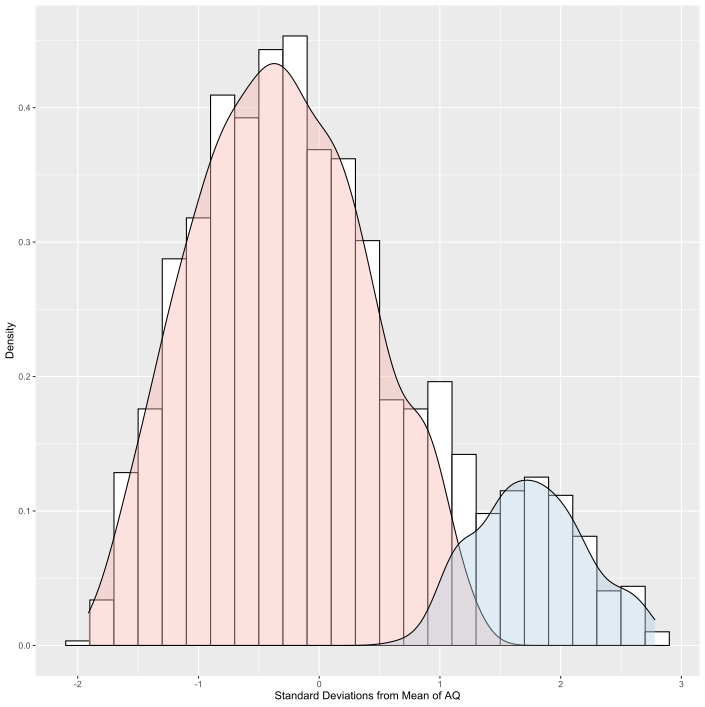
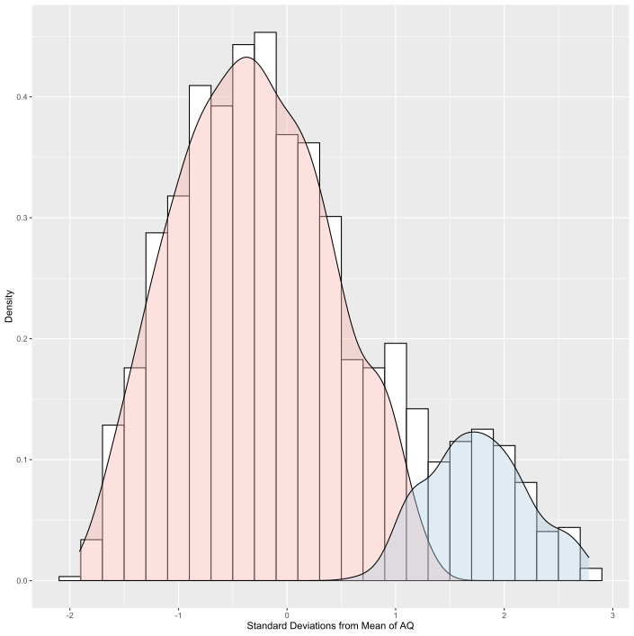

Cultural Comparison
The starting point for this project was trying to understand how autism presents itself throughout the population. Is it a spectrum with everyone on it, or are autistic people their unique group? As a result of the COVID-19 outbreak, all participant recruitment was suspended. As such, I reached out to all researchers who had ever used the Glasgow Sensory Questionnaire. These researchers gave me access to data from tens of thousands of participants from countries all of the world.
Handling this amount of data from diverse sources came with challenges, however, I performed our intended analyses. A paper is currently being written and should be published as a pre-print shortly. A preview of our expected results can be seen below.
 

Elliot Millington
Postgraduate Research Student
I am a postgraduate research student at the University of Glasgow where I am completing a PhD that’s funded by the ESRC/SGSSS and supervised by Dr David Simmons and Dr Neil McDonnell. My research interests centre around autism, specificially how the senses and anxiety interact with each other. I am also interested in psychometrics and using Virtual Reality in research.